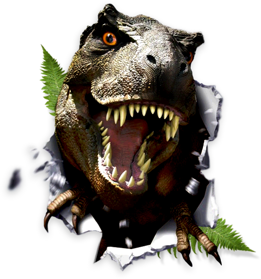

History
Jurassic Park’s creation was funded by InGen, a bioengineering company based out of California, United States. The theme park resides on the beautiful island Isla Nublar, which offers the dinosaurs a tropical atmosphere more in tune to their prehistoric temperatures. It was constructed in 1984.
You may be wondering, “How did a team of scientists manage to bring back the dinosaurs after millions of years of extinction?” This truly marvelous scientific feat was done by extracting the DNA of dinosaurs from mosquitoes, perfectly preserved in amber, a type of crystallized tree resin. From this extraction a team of scientists were able to clone the present DNA and filled unavoidable gaps using modern amphibian and reptilian DNA. Today, more than thirty years later, Jurassic Park has raised over 200 dinosaurs in 28 breeds, mostly herbivorous (plant-eating).
The Hatchery
The hatchery is where all stories on Jurassic Park begin. The reproduction of all dinosaurs is done all within the containment of our laboratory, under the supervision of trained wildlife professionals.
Much like birds, dinosaurs begin their story as an egg. Our eggs are incubated under a state-of-the-art heat lamp, nested closely to other eggs (real or artificial, depending on the season) to simulate a true nest. Did you know that the temperature determines the gender of the dinosaur? To keep our dinosaurs under control, just one male dinosaur is born for every twenty females. This ensures a healthy population of dinosaurs.
Young dinosaurs are often introduced to a single mature dinosaur of the same species sometime within the first year of life. The specific breed of dinosaur determines the true timing of this process. Most dinosaurs are solitary creatures; however, some--like the velociraptor--do hunt in packs. It is important to establish a relationship with the young dinosaur to the older dinosaurs if this is the case, to properly facilitate the hatchling into the group.
We offer hatchery visits every first and third Saturday of the month. To reserve a seat at the next hatchery tour, call (555)555-5555 today!
